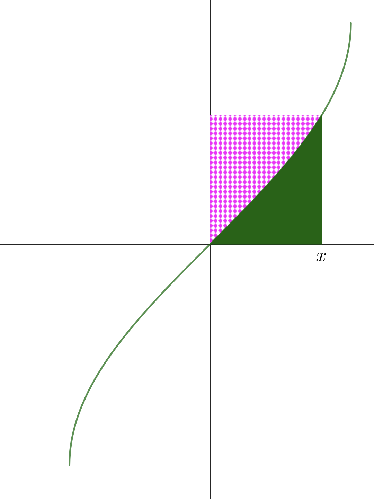

Welcome to inverse circular functions: extension
Having explored the definitions, graphs, and identities of \(\boldsymbol{\arcsin x}\), \(\boldsymbol{\arccos x}\), and \(\boldsymbol{\arctan x}\) in Part 1, we now extend our study to the remaining inverse circular functions — \(\boldsymbol{\operatorname{arcsec} x}\), \(\boldsymbol{\operatorname{arccosec} x}\), and \(\boldsymbol{\operatorname{arccot} x}\) — and explore compositions, identities, derivatives, and integrals.
Use the patterns you already know from \(\arcsin\), \(\arccos\), and \(\arctan\) to guide you!
graphs of \(\boldsymbol{\operatorname{arcsec} x}\), \(\boldsymbol{\operatorname{arccosec} x}\), and \(\boldsymbol{\operatorname{arccot} x}\)
The graph of \(y = \arccos x\) is shown as a reminder. Its domain is \([-1, 1]\) and its range is \([0, \pi]\).

The function \(\sec x\) is the reciprocal of \(\cos x\). Using the domain and range of \(\arccos x\) as a guide:
(a) What should the range of \(\operatorname{arcsec} x\) be?
(b) What value must be excluded from this range? (Hint: when is \(\sec x\) undefined?)
(c) What is the domain of \(\operatorname{arcsec} x\)?
(a) What should the range of \(\operatorname{arcsec} x\) be?
(b) What value must be excluded from this range?
(c) What is the domain of \(\operatorname{arcsec} x\)?
The graph of \(y = \sec x\), with the relevant branch highlighted, is shown below. Add the graph of \(y = \operatorname{arcsec} x\) by reflecting in the line \(y = x\).


The graph of \(y = \operatorname{cosec}\, x\), with the relevant branch highlighted, is shown below.

(a) Write down the domain and range of \(\operatorname{arccosec} x\).
(b) Add the graph of \(y = \operatorname{arccosec} x\) to the diagram.

The graph of \(y = \cot x\), with the relevant branch highlighted, is shown below.

(a) Unlike \(\sec x\) and \(\operatorname{cosec}\, x\), the range of \(\cot x\) on its principal branch is all of \(\mathbb{R}\). What are the domain and range of \(\operatorname{arccot} x\)?
(b) Add the graph of \(y = \operatorname{arccot} x\) to the diagram.

compositions of inverse circular functions
The right-angled triangle below shows the relationships when \(\theta = \arcsin x\), so \(\sin\theta = x\) and the hypotenuse is 1.

Use the triangle to find \(\cos(\arcsin x)\). State any necessary restriction on \(x\).
Find \(\cos(\arcsin x)\).
Since \(\arcsin x \in \bigl[-\tfrac{\pi}{2}, \tfrac{\pi}{2}\bigr]\), the cosine is non-negative, so we take the positive square root.
The right-angled triangle below illustrates the angle \(\phi = \arccos(\sin\theta)\) for \(\theta \in \bigl[-\tfrac{\pi}{2}, \tfrac{\pi}{2}\bigr]\).

Find \(\arccos(\sin\theta)\) in terms of \(\theta\).
Find \(\arccos(\sin\theta)\) for \(\theta \in \bigl[-\tfrac{\pi}{2},\tfrac{\pi}{2}\bigr]\).
Because \(\cos\bigl(\tfrac{\pi}{2}-\theta\bigr) = \sin\theta\), and \(\tfrac{\pi}{2}-\theta \in [0,\pi]\) for \(\theta \in \bigl[-\tfrac{\pi}{2},\tfrac{\pi}{2}\bigr]\), so the principal value condition is satisfied.
Use the right-angled triangle shown to find:

(a) \(\sin(\arccos x)\)
(b) \(\arcsin(\cos\phi)\) for \(\phi \in [0, \pi]\)
(a) \(\sin(\arccos x)\)
(b) \(\arcsin(\cos\phi)\) for \(\phi \in [0, \pi]\)
For (b): \(\sin\bigl(\tfrac{\pi}{2}-\phi\bigr)=\cos\phi\) and \(\tfrac{\pi}{2}-\phi\in\bigl[-\tfrac{\pi}{2},\tfrac{\pi}{2}\bigr]\) for \(\phi\in[0,\pi]\). ✓
Use the right-angled triangle shown to find \(\tan(\arcsin x)\) and \(\tan(\arccos x)\).

Find \(\tan(\arcsin x)\) and \(\tan(\arccos x)\).
Use the right-angled triangle shown to find \(\sin(\arctan x)\) and \(\cos(\arctan x)\).

Find \(\sin(\arctan x)\) and \(\cos(\arctan x)\).
Since \(\arctan x \in \bigl(-\tfrac{\pi}{2}, \tfrac{\pi}{2}\bigr)\), the cosine is always positive.
Use the two right-angled triangles shown to simplify each expression.


(a) \(\sin(\operatorname{arccosec} x)\)
(b) \(\operatorname{cosec}(\arcsin x)\)
(c) \(\cos(\operatorname{arcsec} x)\)
(d) \(\sec(\arccos x)\)
(a) \(\sin(\operatorname{arccosec} x)\) (b) \(\operatorname{cosec}(\arcsin x)\) (c) \(\cos(\operatorname{arcsec} x)\) (d) \(\sec(\arccos x)\)
Use the right-angled triangle shown to simplify \(\tan(\operatorname{arccot} x)\) and \(\cot(\arctan x)\).

Simplify \(\tan(\operatorname{arccot} x)\) and \(\cot(\arctan x)\).
Since \(\tan(\operatorname{arccot} x) = \dfrac{1}{x}\), what does this tell us about the relationship between \(\operatorname{arccot} x\) and \(\arctan x\)? Is it true that \(\operatorname{arccot} x = \arctan\left(\dfrac{1}{x}\right)\) for all \(x \neq 0\)?
For \(x > 0\): both \(\operatorname{arccot} x\) and \(\arctan(1/x)\) lie in \(\bigl(0, \tfrac{\pi}{2}\bigr)\), so
\[\operatorname{arccot} x = \arctan\left(\frac{1}{x}\right) \quad \text{for } x > 0.\]For \(x < 0\): \(\operatorname{arccot} x \in \bigl(\tfrac{\pi}{2}, \pi\bigr)\) but \(\arctan(1/x) \in \bigl(-\tfrac{\pi}{2}, 0\bigr)\), so
\[\operatorname{arccot} x = \pi + \arctan\left(\frac{1}{x}\right) \quad \text{for } x < 0.\]The graphs of \(y = \operatorname{arccot} x\) and \(y = \arctan x\) are shown together below.

What symmetry do you observe? Use it to state the value of \(\operatorname{arccot} x + \arctan x\).
The graphs of \(y = \operatorname{arcsec} x\) and \(y = \operatorname{arccosec} x\) are shown together below.

What symmetry do you observe? Use it to state the value of \(\operatorname{arcsec} x + \operatorname{arccosec} x\).
Find \(\operatorname{arccot} x + \arctan x\) and \(\operatorname{arcsec} x + \operatorname{arccosec} x\).
In each case the two graphs are reflections of one another in the horizontal line \(y = \tfrac{\pi}{4}\), so their sum is always \(\tfrac{\pi}{2}\). This mirrors the familiar identity \(\arcsin x + \arccos x = \tfrac{\pi}{2}\).
differentials of \(\boldsymbol{\operatorname{arcsec} x}\), \(\boldsymbol{\operatorname{arccosec} x}\), and \(\boldsymbol{\operatorname{arccot} x}\)
Find \(\dfrac{\mathrm{d}}{\mathrm{d}x}\operatorname{arcsec} x\) by two methods.
Method 1 — implicit differentiation
Let \(y = \operatorname{arcsec} x\), so \(x = \sec y\) with \(y \in [0,\pi]\setminus\{\tfrac{\pi}{2}\}\).
(a) Find \(\dfrac{\mathrm{d}x}{\mathrm{d}y}\) in terms of \(y\).
(b) Use the identity \(\sec^2 y - \tan^2 y = 1\) to express \(\tan^2 y\) in terms of \(x\). For \(y \in [0, \tfrac{\pi}{2})\), is \(\tan y\) positive or negative?
(c) Hence find \(\dfrac{\mathrm{d}y}{\mathrm{d}x}\) in terms of \(x\).
Method 2 — using \(\boldsymbol{\operatorname{arcsec} x = \arccos\!\left(\dfrac{1}{x}\right)}\)
(d) Differentiate using the chain rule to confirm your answer.
Find \(\dfrac{\mathrm{d}}{\mathrm{d}x}\operatorname{arcsec} x\) by two methods.
Method 1:
\[\begin{aligned} &x = \sec y \;\Rightarrow\; \frac{\mathrm{d}x}{\mathrm{d}y} = \sec y\tan y\\[8pt] &\tan^2 y = \sec^2 y - 1 = x^2-1\\[6pt] &\text{For } y\in\bigl[0,\tfrac{\pi}{2}\bigr)\!:\; \tan y \geq 0,\;\text{so } \tan y = \sqrt{x^2-1}\\[8pt] &\frac{\mathrm{d}y}{\mathrm{d}x} = \frac{1}{\sec y\tan y} = \frac{1}{x\sqrt{x^2-1}} \end{aligned}\]Method 2:
\[\frac{\mathrm{d}}{\mathrm{d}x}\arccos\left(\frac{1}{x}\right) = \frac{-1}{\sqrt{1-\tfrac{1}{x^2}}}\cdot\left(-\frac{1}{x^2}\right) = \frac{1}{x^2\sqrt{\tfrac{x^2-1}{x^2}}} = \frac{1}{x\sqrt{x^2-1}}\] \[\boxed{\frac{\mathrm{d}}{\mathrm{d}x}\operatorname{arcsec} x = \frac{1}{x\sqrt{x^2-1}}, \quad x > 1}\]
Use a similar approach to find \(\dfrac{\mathrm{d}}{\mathrm{d}x}\operatorname{arccosec} x\).
Method 1: Let \(y = \operatorname{arccosec} x\), so \(x = \operatorname{cosec}\, y\). Find \(\dfrac{\mathrm{d}x}{\mathrm{d}y}\) and use \(\cot^2 y = \operatorname{cosec}^2 y - 1\).
Method 2: Use \(\operatorname{arccosec} x = \arcsin\left(\dfrac{1}{x}\right)\) and differentiate by the chain rule.
Find \(\dfrac{\mathrm{d}}{\mathrm{d}x}\operatorname{arccosec} x\).
Method 1:
\[\begin{aligned} &x = \operatorname{cosec}\, y \;\Rightarrow\; \frac{\mathrm{d}x}{\mathrm{d}y} = -\operatorname{cosec}\, y\cot y\\[8pt] &\cot^2 y = \operatorname{cosec}^2 y - 1 = x^2-1\\[6pt] &\text{For } y\in\bigl(0,\tfrac{\pi}{2}\bigr]\!:\; \cot y \geq 0,\;\text{so } \cot y = \sqrt{x^2-1}\\[8pt] &\frac{\mathrm{d}y}{\mathrm{d}x} = \frac{-1}{x\sqrt{x^2-1}} \end{aligned}\] \[\boxed{\frac{\mathrm{d}}{\mathrm{d}x}\operatorname{arccosec} x = \frac{-1}{x\sqrt{x^2-1}}, \quad x > 1}\]Now find \(\dfrac{\mathrm{d}}{\mathrm{d}x}\operatorname{arccot} x\) by two methods.
Method 1: Let \(y = \operatorname{arccot} x\), so \(x = \cot y\). Find \(\dfrac{\mathrm{d}x}{\mathrm{d}y}\) and use a Pythagorean identity.
Method 2: Differentiate both sides of \(\operatorname{arccot} x + \arctan x = \dfrac{\pi}{2}\).
Find \(\dfrac{\mathrm{d}}{\mathrm{d}x}\operatorname{arccot} x\).
Method 1:
\[\begin{aligned} &x = \cot y \;\Rightarrow\; \frac{\mathrm{d}x}{\mathrm{d}y} = -\operatorname{cosec}^2 y\\[8pt] &\operatorname{cosec}^2 y = 1 + \cot^2 y = 1 + x^2\\[8pt] &\frac{\mathrm{d}y}{\mathrm{d}x} = \frac{-1}{1+x^2} \end{aligned}\]Method 2:
\[\frac{\mathrm{d}}{\mathrm{d}x}\!\left(\operatorname{arccot} x + \arctan x\right) = 0 \;\Rightarrow\; \frac{\mathrm{d}}{\mathrm{d}x}\operatorname{arccot} x = -\frac{1}{1+x^2}\] \[\boxed{\frac{\mathrm{d}}{\mathrm{d}x}\operatorname{arccot} x = \frac{-1}{1+x^2}}\]integrals of inverse circular functions
We can find \(\int \arcsin x\,\mathrm{d}x\) using an area argument. The region under \(y = \arcsin x\) from \(x=0\) to \(x=a\) can be related to the area of a rectangle minus a complementary curved region.
Consider the rectangle with corners \((0,0)\) and \((a,\, \arcsin a)\).
(a) What is its area?
(b) The complementary region (to the left of the curve from \(y=0\) to \(y=\arcsin a\)) has area \(\displaystyle\int_0^{\arcsin a} \sin y\,\mathrm{d}y\). Evaluate this.
(c) Hence find \(\displaystyle\int_0^a \arcsin x\,\mathrm{d}x\).
Find \(\displaystyle\int_0^a \arcsin x\,\mathrm{d}x\) and deduce \(\displaystyle\int \arcsin x\,\mathrm{d}x\).
Use a similar area argument to find \(\displaystyle\int \arccos x\,\mathrm{d}x\).
Consider the region under \(y = \arccos x\) from \(x=0\) to \(x=a\) (where \(0 < a < 1\)).
(a) The rectangle with height \(\arccos(0) = \dfrac{\pi}{2}\) and width \(a\) covers the region plus some extra. What is its area?
(b) The complementary curved region (to the left of \(y = \arccos x\)) has area \(\displaystyle\int_{\arccos a}^{\pi/2}\!\cos y\,\mathrm{d}y\). Evaluate this.
(c) Hence find \(\displaystyle\int_0^a \arccos x\,\mathrm{d}x\) and deduce \(\displaystyle\int \arccos x\,\mathrm{d}x\).
Find \(\displaystyle\int \arccos x\,\mathrm{d}x\) using the area argument.
Use the area argument to find \(\displaystyle\int \arctan x\,\mathrm{d}x\).
Consider the region under \(y = \arctan x\) from \(x=0\) to \(x=a\). The complementary region (below the curve) has area \(\displaystyle\int_0^{\arctan a}\!\tan y\,\mathrm{d}y\).
(a) What is the area of the rectangle with corners \((0,0)\) and \((a,\,\arctan a)\)?
(b) Evaluate \(\displaystyle\int_0^{\arctan a}\!\tan y\,\mathrm{d}y\). (Recall \(\displaystyle\int\tan y\,\mathrm{d}y = \ln\sec y + C\).)
(c) Hence deduce \(\displaystyle\int \arctan x\,\mathrm{d}x\).
Find \(\displaystyle\int \arctan x\,\mathrm{d}x\).
Verify the results for \(\displaystyle\int\arcsin x\,\mathrm{d}x\) and \(\displaystyle\int\arccos x\,\mathrm{d}x\) using integration by parts with \(u = \arcsin x\) (or \(\arccos x\)) and \(\mathrm{d}v = \mathrm{d}x\).
Verify \(\displaystyle\int\arcsin x\,\mathrm{d}x = x\arcsin x + \sqrt{1-x^2} + C\) and \(\displaystyle\int\arccos x\,\mathrm{d}x = x\arccos x - \sqrt{1-x^2} + C\) by integration by parts.
For \(\arcsin x\): let \(u = \arcsin x\), \(\mathrm{d}v = \mathrm{d}x\):
\[\int\arcsin x\,\mathrm{d}x = x\arcsin x - \int\frac{x}{\sqrt{1-x^2}}\,\mathrm{d}x = x\arcsin x + \sqrt{1-x^2} + C \;\checkmark\]For \(\arccos x\): let \(u = \arccos x\), \(\mathrm{d}v = \mathrm{d}x\):
\[\int\arccos x\,\mathrm{d}x = x\arccos x - \int\frac{-x}{\sqrt{1-x^2}}\,\mathrm{d}x = x\arccos x - \sqrt{1-x^2} + C \;\checkmark\]The area under \(y = \sqrt{1-x^2}\) (the upper unit semicircle) from \(x=0\) to \(x=a\) (where \(0 < a < 1\)) can be split into a circular sector and a right-angled triangle.
Let \(\theta = \arcsin a\). Show geometrically that
\[\int_0^a\!\sqrt{1-x^2}\,\mathrm{d}x = \frac{1}{2}\arcsin a + \frac{1}{2}a\sqrt{1-a^2}\]and hence write down \(\displaystyle\int\sqrt{1-x^2}\,\mathrm{d}x\).
Find \(\displaystyle\int\sqrt{1-x^2}\,\mathrm{d}x\) geometrically, then verify using the substitution \(x = \sin u\).
Geometric argument:
The region is composed of a circular sector (radius 1, angle \(\theta = \arcsin a\)) with area \(\tfrac{1}{2}\theta\), and a right-angled triangle (base \(a\), height \(\sqrt{1-a^2}\)) with area \(\tfrac{1}{2}a\sqrt{1-a^2}\).
\[\int_0^a\!\sqrt{1-x^2}\,\mathrm{d}x = \frac{\arcsin a}{2} + \frac{a\sqrt{1-a^2}}{2}\] \[\boxed{\int\sqrt{1-x^2}\,\mathrm{d}x = \frac{1}{2}\arcsin x + \frac{1}{2}x\sqrt{1-x^2} + C}\]Verification by substitution \(x = \sin u\):
\[\begin{aligned} &\mathrm{d}x = \cos u\,\mathrm{d}u, \quad \sqrt{1-x^2} = \cos u\\[6pt] &\int\sqrt{1-x^2}\,\mathrm{d}x = \int\cos^2 u\,\mathrm{d}u = \int\frac{1+\cos 2u}{2}\,\mathrm{d}u\\[6pt] &= \frac{u}{2} + \frac{\sin 2u}{4} + C = \frac{\arcsin x}{2} + \frac{x\sqrt{1-x^2}}{2} + C \;\checkmark \end{aligned}\]
Congratulations on completing this extension!
You have now mastered the full family of inverse circular functions. You can draw and interpret the graphs of \(\operatorname{arcsec} x\), \(\operatorname{arccosec} x\), and \(\operatorname{arccot} x\), simplify compositions of inverse and standard circular functions, and work with the beautiful identities they satisfy.
You have also derived the derivatives of all six inverse circular functions and used geometric area arguments to find their integrals — connecting differentiation, integration, and geometry in a deep and satisfying way.
The techniques here — implicit differentiation, area arguments, and substitution — are powerful tools that extend far beyond inverse functions!